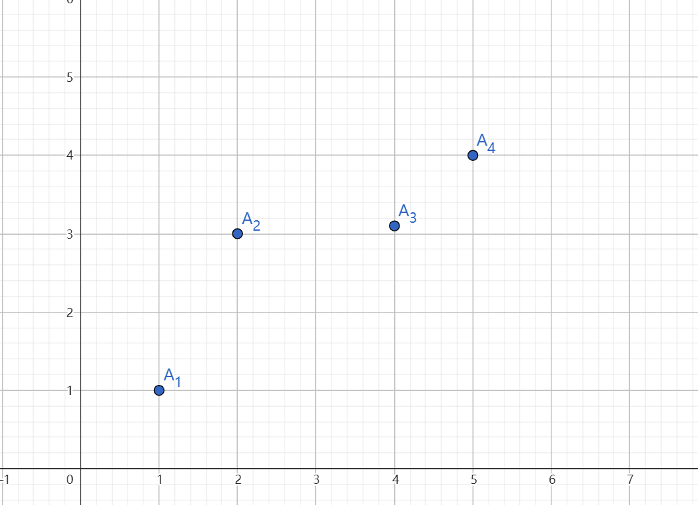
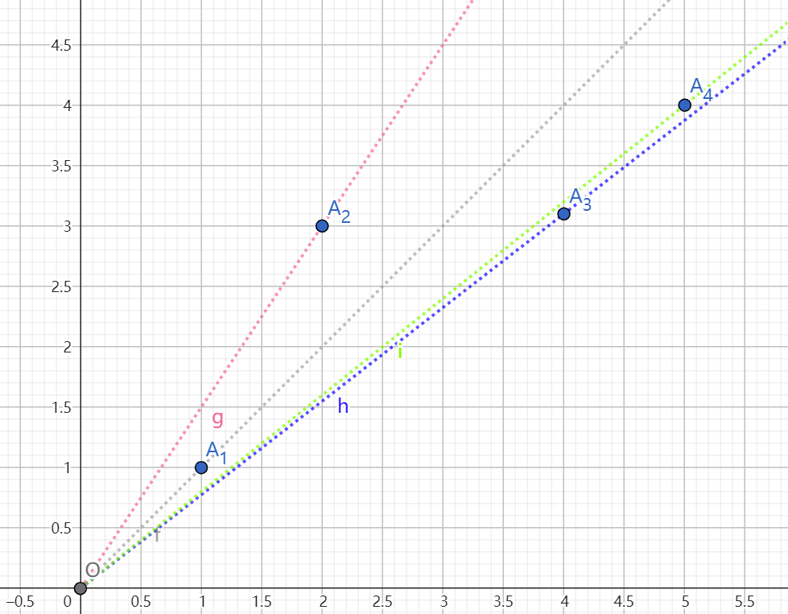

Model-Based Pricing
动机确认
数据市场究竟应该怎么卖数据？
以往的传统操作方法：
-
直接售卖数据集：缺点在于买下相同数据集的价格是固定且高昂的，一些买家可能无法负担。从另一个角度，卖家的收益就少了。
-
售卖查询：缺点在于，仅仅售卖查询不足以让买家进行复杂的决策。
以前训练模型的任务都是交给买家完成，但事实上卖家（或者中间商）就可以做到这一步，之所以要直接卖模型，正是因为添加不同量模型的噪声对应不同的价值，这样我们就能对不同需求的买家收费(版本化)。
模型构建(案件还原)
线索1： \(\delta \leftrightarrow \epsilon\)
添加噪声必然使得模型输出变得不准（分类模型or回归模型），关键是如何刻画。文中我们可以简单得到如下关系：
Let \( \epsilon \) be convex as a function of the model instance \( h \).
Let
Then, for any two parameters \(\delta_1, \delta_2\), we have
if and only if \(\delta_1 \ge \delta_2\).
If \(\epsilon\) is additionally strictly convex, the above holds with strict inequality (\(>\)).
线索2： \(\epsilon \leftrightarrow p\)
在（买家提供的）误差函数\(\epsilon(.,.)\)检验下，显然更低的误差意味着更高的价值，即：
意味着
如果仅仅到此为止，这非常简单（我们可以让噪声越高的模型价格越低就可以），但关键就在于，两个低价格，高噪声的模型，可能合成出一个低噪声的模型，其成本可能低于直接购买该模型，即套利。
关键推论：无套利条件
作者依据Cramer-Rao不等式（以及其他Fisher Information相关推论）提供的下界，证明了对于平方误差下无套利条件有这样的性质： (1) If
then
(2) If $$ \delta_1 \le \delta_2, $$
then
简单记为：
满足次可加性和单调两个条件。
当然，平方误差只是一个特例，任何严格凸的误差函数，在\(\delta\)和\(\epsilon\)之间都构成双射，我们只需要构造一个逆函数
只要
满足次可加性和单调两个条件就实现了无套利，显然，对于平方误差，\(\phi(x)\equiv x\)。
现在为止，我们真正建立了\(\delta \leftrightarrow p\)的约束关系。
简化并解决
原始问题分析
我们通过市场调研得到了不同买家对于不同质量模型的需求，那么问题实际上就是一个带约束的优化问题：
另外，我们容易发现求解最大收益实际上是一种次线性插值问题。然而，这是一个CO-NP问题。
由于无界子集和问题是一个NP-hard问题，作者已经证明证明：当且仅当不存在值为 \(K\) 的（无界）子集和时，才存在一个次可加且单调的函数能够插值这些点 \((a_j, P_j)\)。
我们往往可以近似解决或者解决一个相关问题，然后分析相关问题的精确解与原问题的解的关系，本文采用了后者。
退一步讲
我们可以缩小搜索空间，将原问题缩小为如下问题（这里指的是下面问题的解满足原问题约束，反之不然）：
之所以要提出这个缩小版问题，有两个原因，第一个原因，那就是他有与原问题最优相比优良的性质,当“小问题”有可行解\(\hat{q}\)时，原问题就有可行解\(\hat{p}\),且
最重要的是第二个原因：该问题多项式时间内可解
在解决最终问题前，我们可以首先把这个“小”问题再简化一下，从函数的关系直接到点的关系（等价性证明略）：
最后一块拼图——动态规划求解
作者的动态规划颇为奇怪，但我们最终一定能够拨云见日。
比如下面只有4个点的情况，假设从\(A_1\)到\(A_4\)每个点的权重(人数)分别为2,3,4,1。
简单证明可知，我们在每一个x下最优定价必然会出现在斜率约束处或者单调约束处。由于本论文出现的所有点默认就是满足单调性约束的（这是相对合理的，因为人们往往会对高精度产品做出高估值，尤其是在信息差很小的情况），那么，我们的所有约束其实就是斜率约束。

如下所示，我们做出约束线：

按照斜率从大到小我们可以编号为\(l_1,l_2,...,l_4\)，斜率可以编号为\(\Delta_1,\Delta_2,...,\Delta_4\),需要注意的是，斜率的编号与点的编号是不对应的。
我们的动态规划是从最后一个点开始的，比如说一共有m个点，其中\(OPT(t,\Delta_i)\)指的就是，考虑到第\(t,t+1,...,m\)个点，且所有定价点都在l_i这条线下方的定价的最优解（数值上）。一个关键点在于，当i<j时，\(OPT(t,\Delta_i) \leq OPT(t,\Delta_j)\)。
我们从最后一个点（也就是第4个点）开始看，显然\(OPT(4,\Delta_1)=OPT(4,\Delta_2)=OPT(4,\Delta_3)=v4\),\(OPT(4,\Delta_3)=\Delta_3 \times v_4\)。
显然我们回到倒数第二个点（也就是第3个点）开始看，这时由于\(l_1,l_2,l_3\)都在\(A_3\)上方了，那就意味着\(OPT(3,\Delta_1)\)(或2,3)要取到的最大值必然是\(OPT(3,\Delta_4)\)和\(OPT(4,\Delta_1)\)（或2,3）中的最大的一个。思考如下：此处的点可能与后面的点不兼容，也可能兼容，那么当i<j时，\((3,\Delta_i)\)兼容的 一定会在\((3,\Delta_j)\)处兼容；当不兼容出现时，比如此时\(OPT(3,\Delta_1)\)也可以抛弃掉该点，因此\(OPT(3,\Delta_1)\)必定是\(OPT(3,\Delta_4)\)和\(OPT(3,\Delta_1)\)的较大者，对于\(OPT(3,\Delta_1)\),自然就是 \(4v3+\Delta_3×v_4\)
以此更新OPT最终更新到\(OPT(1,\Delta_1)\),我们就找到了最优解。
不是很方便描述，具体还是得看原文最后一页
回顾梳理
据我的回忆，机制执行过程简单概括如下：
- 中间人市场调查，得到模型需求，得到一个噪声-价值的点对的集合。
- 利用动态规划计算最优价格。
- 一手交钱，一手交货。